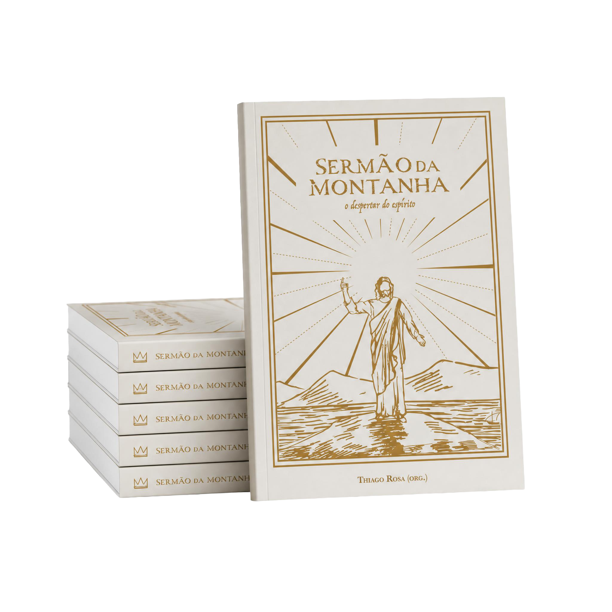

Localização histórica real
Cada capítulo começa com o contexto geográfico — o Monte das Beatitudes, o Mar da Galileia, Jerusalém. O texto ganhe corpo quando você sabe onde ele aconteceu.
Sete palestrantes. Nove encontros. Uma leitura do texto mais famoso da história que vai do contexto histórico do Mar da Galileia até o coração de quem assiste.
Isso é Sermão da Montanha: O Despertar do Espírito — um documentário para quem quer ir além da superfície.
Se você se identificou com algum desses momentos, provavelmente não é falta de fé.
É falta de contexto.
O Sermão da Montanha foi proferido em aramaico, num monte à beira do Mar da Galileia, por um rabino judeu que conhecia profundamente a Torá e o hebraico. Quando ele disse "Bem-aventurados os pobres de espírito", usou uma expressão que, no original, tem um significado completamente diferente do que qualquer tradução moderna é capaz de transmitir.
Esse documentário existe para preencher exatamente essa lacuna.
É um documentário em 9 capítulos que percorre, verso por verso, o ensinamento mais completo que Jesus deixou registrado — do contexto geográfico e histórico até a aplicação espiritual profunda de cada palavra.
Não é um curso. Não é uma pregação. É uma experiência de estudo com sete palestrantes que dedicaram anos a compreender o texto original: sua etimologia hebraica, seu contexto arqueológico, sua ressonância com a Torá e seu impacto na espiritualidade universal.
Ao final dos 9 capítulos, você não vai apenas conhecer o Sermão da Montanha.
Você vai entendê-lo.
Cada capítulo começa com o contexto geográfico — o Monte das Beatitudes, o Mar da Galileia, Jerusalém. O texto ganhe corpo quando você sabe onde ele aconteceu.
Os palestrantes mergulham no hebraico e no aramaico para revelar o que se perde em qualquer tradução — incluindo o significado real de Ashirei, a palavra que abre as Bem-aventuranças.
Cada episódio conecta o ensinamento de Jesus a temas vivos: ansiedade, relações, julgamento, propósito. Não é arqueologia pela arqueologia — é compreensão a serviço da vida.
Cada episódio pode ser assistido no seu ritmo, na ordem que fizer sentido para você. O acesso é vitalício.
O contexto que tudo muda: quem era Jesus como rabino, onde fica o Monte das Beatitudes, e por que o Sermão da Montanha é considerado o ensinamento mais completo da tradição cristã. (Mateus 5–7)
A palavra Ashirei em hebraico não significa "feliz" — significa "portador de luz". Esse capítulo redefine o que Jesus chamou de felicidade e por que essa distinção muda tudo.
O que significa ser sal e luz? Esse capítulo explora o valor próprio, a responsabilidade espiritual e a permanência dos ensinamentos ao longo dos séculos.
Jesus como sucessor de Moisés. A relação entre o Sermão da Montanha e as Acer Devarim (as Dez Palavras da Torá). A ética atemporal de esmola, jejum e oração.
Verso por verso, palavra por palavra. A oração mais conhecida do mundo revisitada em profundidade — o que cada pedido significa no contexto original.
Ansiedade, materialismo e a pergunta que Jesus faz diretamente: onde está o seu coração? Um dos capítulos mais aplicáveis à vida contemporânea.
Relações humanas à luz do ensinamento de Jesus: empatia, não julgamento, e a promessa de que quem pede recebe — em que sentido?
O que Jesus quis dizer com "estreita é a porta"? Esse capítulo aborda escolhas corajosas, discernimento espiritual e como reconhecer o que é genuíno.
O capítulo final: fundamentos sólidos, autoridade de Jesus e a conclusão de um ensinamento que atravessou 2.000 anos intacto.
Sete pesquisadores, estudiosos e educadores espirituais que dedicaram anos ao estudo profundo das Escrituras — não para debater religião, mas para iluminar o ensinamento.

Pesquisador bíblico e autor de Analisando as Traduções Bíblicas — referência para quem estuda o texto original das Escrituras. Severino traz a perspectiva do hebraico e do aramaico para revelar o que as traduções modernas não conseguem transmitir. É ele quem desvenda o significado real de Ashirei, a palavra-chave das Bem-aventuranças.
Juntos, formam um grupo plural e complementar — cada um traz uma perspectiva diferente sobre o mesmo texto, criando uma experiência de estudo rica e multidimensional.
Depoimentos reais de pessoas que tiveram acesso ao documentário.
Sou espírita há mais de vinte anos e achei que conhecia bem o Sermão da Montanha. Quando o Severino Celestino explicou o que significa a palavra Ashirei no segundo capítulo, precisei pausar o vídeo. Não porque era complicado — porque era simples demais, e eu nunca tinha enxergado assim.
Renata Oliveira
São Paulo, SP
Sou católico praticante e estava um pouco cético no começo. Mas o capítulo do Pai Nosso me desarmou completamente. Palavra por palavra, com o contexto original do aramaico. Rezei essa oração a vida toda — e só aqui entendi o que estava dizendo.
Carlos Henrique Braga
Belo Horizonte, MG
Não me encaixo em nenhuma religião específica, mas tenho uma busca espiritual muito séria. Esse documentário é o mais honesto que já vi sobre Jesus — sem proselitismo, sem dogma. Só a profundidade do ensinamento. Assisti os 9 capítulos em dois dias.
Fernanda Luz
Rio de Janeiro, RJ
O que me surpreendeu foi o rigor histórico. Saber que Jesus proferiu esse discurso em um monte específico, para um povo específico, dentro de uma tradição religiosa específica — isso não diminui o ensinamento. Pelo contrário, faz ele ser ainda mais impressionante.
Rodrigo Mendes
Porto Alegre, RS
Assisti com minha mãe, que tem 71 anos e é católica a vida toda. No capítulo das Bem-aventuranças ela disse: 'nunca ninguém me explicou isso desse jeito'. Isso diz tudo sobre o que esse documentário faz.
Simone Andrade
Salvador, BA
O Severino é um presente. A forma como ele usa o hebraico para abrir o texto — sem ser acadêmico chato, sem ser pregador — é raro. Comprei por R$129 e o conteúdo vale dez vezes mais do que isso em termos de profundidade.
Thiago Fonseca
Curitiba, PR
O capítulo sobre julgamento mudou algo em mim que palavras não descrevem direito. Eu vivia com muito peso de julgamentos — de mim e dos outros. Esse ensinamento, apresentado desse jeito, chegou onde precisava chegar.
Luciana Campos
Fortaleza, CE
Sou agnóstico. Comprei sem muita expectativa, por indicação de um amigo. Me surpreendi com a seriedade acadêmica e com o respeito que os palestrantes têm pela inteligência de quem assiste. Não precisei 'crer em nada' para tirar muito valor daqui.
André Peixoto
São Paulo, SP
O último capítulo, sobre edificar sobre a rocha, foi o que mais ficou. Estou num momento de reconstrução na minha vida e aquela frase — 'a chuva caiu, e não caiu a casa, porque estava fundada sobre a rocha' — ganhou um peso diferente depois do documentário. Recomendo sem hesitar.
Patrícia Duarte
Goiânia, GO

Para quem prefere o peso do livro nas mãos, a margem para anotações e a página que marca o lugar — o conteúdo do documentário existe também em versão impressa.
Sermão da Montanha: O Despertar do Espírito é a versão condensada do estudo em formato de livro físico. O mesmo rigor, a mesma profundidade — em um objeto que fica na estante e pode ser relido quando quiser.
Organizado por Thiago Rosa, o livro está disponível na Amazon e pode ser enviado para qualquer endereço no Brasil e no exterior.
Vendido separadamente · Enviado pela Amazon
O Sermão da Montanha: O Despertar do Espírito é o primeiro projeto digital do Núcleo Gaspar.
Em mais de três anos de existência, mais de 2.000 pessoas compraram acesso a esse documentário. Cada uma dessas compras financiou diretamente as obras beneficentes conduzidas pelo Núcleo.
Isso não é um detalhe de rodapé. É o motivo pelo qual esse projeto existe.
O ensinamento no capítulo 6 fala sobre tesouros que não enferrujam — sobre onde vale a pena investir energia e recursos. Construir esse documentário e colocá-lo disponível para o mundo foi, em si, uma tentativa de viver esse ensinamento.
Ao comprar, você não está apenas acessando conteúdo. Você está sustentando uma causa real — e fazendo parte da história do primeiro projeto digital que o Núcleo Gaspar trouxe para o mundo.
9 capítulos completos
Assista no seu ritmo, quantas vezes quiser, para sempre.
Pagamento seguro · Processado pela Eduzz
Se em 7 dias você sentir que o documentário não correspondeu ao que foi prometido aqui, devolvemos 100% do seu valor — sem perguntas, sem burocracia.
Não precisamos que você goste por obrigação. Precisamos que você goste porque valeu.
E se não valeu? Estamos errados — e você recebe seu dinheiro de volta.
Tudo bem. Decisões espirituais não precisam ser tomadas às pressas.
O que podemos dizer é: este documentário existe há 3 anos, mais de 2.000 pessoas já assistiram, e ele continua disponível porque continua fazendo sentido.
Se você chegou até aqui nessa página, provavelmente tem uma razão. Pode ser esse o momento certo — ou pode ser que você precise de mais tempo.
Quando estiver pronto, o acesso estará aqui.
Nossa equipe está no WhatsApp para responder o que você precisar — sobre o conteúdo, sobre o acesso, sobre a causa por trás do projeto.
Falar com a equipe no WhatsAppNão como um dever religioso. Não como uma obrigação.
Como uma descoberta.
Quando você entender o que a palavra Ashirei realmente significa — e como ela conecta 2.000 anos de espiritualidade em uma única frase — algo vai mudar na forma como você enxerga tudo isso.
O acesso é vitalício. A causa é real. O conteúdo é sólido.
O momento pode ser esse.